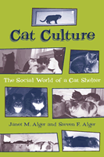

<body bgcolor="#FFFFFF" text="#000000" link="#0000FF" vlink="#CC0000" alink="#CC0000"><center><hr width="350" size="1" align="center" noshade>Understanding cats as social animals<hr width="350" size="1" align="center" noshade><p><a href="https://cdcshoppingcart.uchicago.edu/Cart/ChicagoBook.aspx?ISBN=9781566399975&&PRESS=temple" target="_top">Buy this book!</a> | <a href="https://cdcshoppingcart.uchicago.edu/Cart/Cart.aspx?PRESS=temple" target="_top">View Cart</a> | <a href="https://cdcshoppingcart.uchicago.edu/Cart/Cart.aspx?PRESS=temple" target="_top">Check Out</a></p><p></p></center><!--none//--><h1>Cat Culture</h1>
<H2>The Social World of a Cat Shelter</H2>
<h3>Janet M. Alger and Steven F. Alger</h3>
<P>cloth 1-56639-997-1 $62.50, Dec 02, <FONT COLOR=#990033>Out of Stock Unavailable</FONT>
<br>paper 1-56639-998-X $24.95, Dec 02, <FONT COLOR=#990033>Available</FONT>
<br>Electronic Book 1-43990-772-2 $24.95 <FONT COLOR=#990033>Out of Stock Unavailable</FONT>
<BR> 256 pp
5.5x8.25
10&nbsp;halftones
</P><BLOCKQUOTE><I>"This book, by two sociologists, demonstrates that cats are complex creatures, who reason, think, and above all, </I>feel<I>. They have friends, they show affection, and they accommodate other cats and people into their lives in ways that we consider 'almost human.' The authors have convinced me that humans need to be 'almost cat.'"</I>
<br>&#151<b>Jeffrey Moussaieff Masson</b>, author of <I>The Nine Emotional Lives of Cats: A Journey into the Feline Heart</I><I></I></BLOCKQUOTE>
<p>Even people who live with cats and have good reason to know better insist that cats are aloof and uninterested in relating to humans. Janet and Steven Alger contend that the anti-social cat is a myth; cats form close bonds with humans and with each other. In the potentially chaotic environment of a shelter that houses dozens of uncaged cats, they reveal a sense of self and build a culture&#151a shared set of rules, roles, and expectations that organizes their world and assimilates newcomers.
<p>As volunteers in a local cat shelter for eleven years, the Algers came to realize that despite the frequency of new arrivals and adoptions, the social world of the shelter remained quite stable and pacific. They saw even feral cats adapt to interaction with humans and develop friendships with other cats. They saw established residents take roles as welcomers and rules enforcers. That is, they saw cats taking an active interest in maintaining a community in which they could live together and satisfy their individual needs. <I>Cat Culture</I>'s intimate portrait of life in the shelter, its engaging stories, and its interpretations of behavior, will appeal to general readers as well as academics interested in human and animal interaction.
<BR>&nbsp;<h2>Excerpt</h2><P>Excerpt available at <a href="http://www.temple.edu/tempress">www.temple.edu/tempress</a></p>
<BR>&nbsp;<h2>Reviews</h2>
<p><I>"</I>Cat Culture<I> is a marvelous book. As a sociologist, which I am, I found it to be an insightful, interesting, and sophisticated application of social psychology to the behavior of cats and of humans and cats. As a cat lover, which I also am, I found it to be amusing, instructive, and a very good read."</I>
<br>&#151<b>Richard H. Hall</b>, Distinguished Service Professor of Sociology, University at Albany, SUNY and author of <I>Organizations: Structures, Processes and Outcomes (8th Edition)</I>
<p><I>"Turn two feline-loving sociologists loose in an animal shelter and you get a book that's part ethnography, part plea for interspecies understanding. The Algers' longterm study of the Whiskers Shelter in Albany, N.Y., demonstrated the "extraordinary social capacity of domestic cats as revealed in their everyday activities and relationships with the shelter volunteers and with one another" and how the cats&#151Bandit, Mr. Kitty and colleagues&#151actively helped create 'the social world of the shelter.'"</I>
<br>&#151<b>washingtonpost.com</b>, 6 April 2003
<p><i>"At first glance, this appears to be yet another feel-good book of stories about animals. It is, however, an academic study of the interactions between cats and their human caregivers at a no-kill shelter. The authors, both professors of sociology, based the book on four years of observations conducted while they volunteered at the shelter. They
watched the cats form relationships, surveyed the socialization of previously feral
cats, and both observed and interviewed the shelter volunteers. The Algers, animal rights
activists and owners of multiple cats themselves, follow a model of participant observation, which allows researchers to develop close relationships with their subjects. The result is an interesting mix of academic protocol and illustrative stories. Within a scholarly framework the Algers discuss such subjects as cat friendships, how the resident cats deal with new arrivals, or how the cats "train" the volunteers, fleshing out their points with excerpts from their field notes. Copious chapter notes and a lengthy bibliography offer further research for interested readers. This highly readable work will appeal to all cat owners."</i>
<br>&#151<b><i>Booklist</i></b>
<p><i>"Janet and Steve Alger's book is quite useful, of benefit to academic as well as nonacademic audiences. I heartily recommend it."</i>
<br>&#151<b><i>Qualitative Sociology</i></b>
<p><i>"[P]rovides an insightful and entertaining account of the complex social world of a cat shelter....[it] is an important contribution to the field of human-animal interactions, but also to animal behavior."</i>
<br>&#151<b><i>Anthrozoos</i></b>
<p><i>"</i>Cat Culture<i> as a dual ethnography&#151both of cats and of
volunteers&#151operates with a bifurcated epistemology. We can place
considerable trust in the depiction of the emotional register of volunteers,
while this is not the case of the claims of cats to happiness, security,
or community. The Algers read volunteers from the inside out and
cats from the outside in."</i>
<br>&#151<b><i><a href=" http://jce.sagepub.com/cgi/reprint/33/5/638" target="new">The Journal of Contemporary Ethnography</a></i></b>
<BR>&nbsp;<h2>Contents</h2><P>
<p>Preface: Why an Ethnography of a Shelter?
<br>Acknowledgments
<br>1. The Myth of the Solitary Cat
<br>2. The World of Whiskers
<br>3. The Homan-Cat Connection
<br>4. The Social Bonds among the Cats
<br>5. The Feral Cats and Shelter Solidarity
<br>6. Leaving the Shelter Community
<br>7. Culture and Self in the Domestic Cat
<br>8. Animals in the Future of Sociology
<br>Afterword
<br>Notes
<br>References
<br>Index
</P><BR>&nbsp;<H2>About the Author(s)</H2>
<table><tr><td valign="top"><img src="/tempress/authors/1606_au1.gif" height="90" width="75"></td><td width="100%" valign="middle"><p><b>Janet M. Alger</b> is Professor of Sociology at Siena College.</P></td></tr></table><table><tr><td valign="top"><img src="/tempress/authors/1606_au2.gif" height="90" width="75"></td><td width="100%" valign="middle"><p><b>Steven F. Alger</b> is Associate Professor of Sociology at the College of St. Rose.</P></td></tr></table>
<BR><H2>Subject Categories</H2>
<p><A HREF="/tempress/animal_soc.html" TARGET="_top">Animals and Society</a>
<BR><A HREF="/tempress/sociology.html" TARGET="_top">Sociology</a>
<BR><A HREF="/tempress/general.html" TARGET="_top">General Interest</a>
</p>
<BR><h2 class="inpageheading">In the series</H2>
<P><I><a href="http://www.temple.edu/tempress/animals.html" onMouseOver="window.status='Click for other books in this series!'; return true;" onMouseOut="window.status=''; return true;" target="_top">Animals, Culture, and Society</a></i>, edited by Arnold Arluke and Clinton R. Sanders.
</p><p><I>Animals, Culture, and Society</I>, edited by Arnold Arluke and Clinton R. Sanders, is concerned with probing the complex and contradictory human-animal relationship through the publication of accessible books that consider the place of animals in our culture, our literature, our society, and our homes.</p>
<p align="center"><a href="https://cdcshoppingcart.uchicago.edu/Cart/ChicagoBook.aspx?ISBN=9781566399975&&PRESS=temple" target="_top">Buy this book!</a> | <a href="https://cdcshoppingcart.uchicago.edu/Cart/Cart.aspx?PRESS=temple" target="_top">View Cart</a> | <a href="https://cdcshoppingcart.uchicago.edu/Cart/Cart.aspx?PRESS=temple" target="_top">Check Out</a></p><p><font face="Arial" size="1"><a href="copyright.html" onMouseOver="window.status='Web Copyright Policy';return true;" onMouseOut="window.status=''" title="Web Copyright Policy">&copy;</a> 2015 <a href="http://www.temple.edu" target="new" onMouseOver="window.status='Link to Temple University home page';return true;" onMouseOut="window.status=''" title="Link to Temple University home page">Temple University</a>. All Rights Reserved. http://www.temple.edu/tempress/titles/1606_reg.html</font></p>